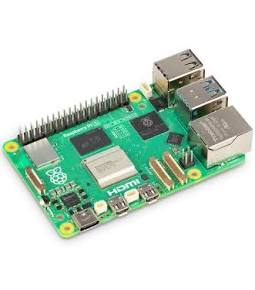
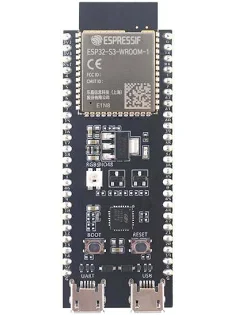
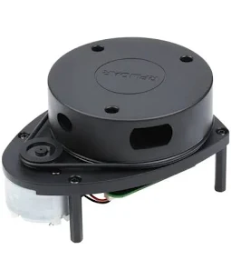
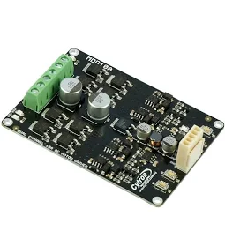

You said:
ChatGPT said:
Sì. E per RumiAI costruirei un rover domestico modulare, non un umanoide e nemmeno un braccio robotico come primo passo. È il modo più semplice per arrivare rapidamente a qualcosa che vede, sente la propria posizione, si muove e può essere comandato da RumiAI, mantenendo però l'hardware sostituibile.
La cosa interessante è che l'architettura corrente di RumiAI ci porta già nella direzione giusta: il SENSE-MODEL separa esplicitamente la capacità cognitiva AI dai meccanismi deterministici di osservazione e controllo. Quindi il robot dovrebbe essere costruito così:
RumiAI ragionamento / goal │ ▼ futuro sense robotico [livello cognitivo] │ ▼ API deterministica del robot [nessuna intelligenza] │ ┌───────────┴───────────┐ ▼ ▼ navigazione osservazione move / rotate / stop camera / lidar / posizione / batteria │ │ └───────────┬───────────┘ ▼ computer a bordo Raspberry Pi 5 │ ▼ ESP32-S3 controllo real-time motori / encoder │ ▼ mondo fisico
Questa sarebbe quasi la controparte fisica del modello già adottato per web-sense → web-control, senza fissare ora nomi o contratti nuovi.
Il robot che costruirei per primo
Meccanicamente farei una piattaforma di circa 25–35 cm, con due ruote motrici indipendenti e una ruota folle. È il classico differential drive: per andare dritto fai girare i due motori alla stessa velocità, per curvare a velocità diverse e per ruotare sul posto li fai girare in direzioni opposte.
Non serve una struttura sofisticata. Una lastra di compensato, alluminio o plastica tagliata a mano è sufficiente per il primo PoC. L'importante è comprare motori DC con encoder, perché senza encoder il robot non sa realmente quanto si è mosso.
La struttura elettronica che sceglierei è questa:
| Livello | Componente | Responsabilità |
|---|---|---|
| RumiAI | server/workstation | percezione semantica, ragionamento, pianificazione |
| computer del robot | Raspberry Pi 5 | rete, camera, LiDAR, localizzazione, API di controllo |
| real-time | ESP32-S3 | encoder, PID motori, PWM, watchdog |
| potenza | driver duale MOSFET | alimentazione dei due motori |
| movimento | 2 motoriduttori + encoder | locomozione |
| orientamento | IMU | accelerazione e rotazione |
| ambiente | camera | visione |
| ambiente avanzato | LiDAR 360° | mappa e ostacoli |
| sicurezza | E-stop + bumper | arresto indipendente dall'AI |
Un Raspberry Pi 5 è molto adatto come computer del primo robot: ha Cortex-A76 quad-core a 2,4 GHz, Gigabit Ethernet, Wi-Fi, GPIO, USB, due interfacce MIPI per camera/display e PCIe. Raspberry Pi+1
L'ESP32 invece lo userei volutamente sotto il Raspberry, non al posto del Raspberry. Il Pi può essere occupato, riavviarsi o avere jitter; l'ESP32 continua ad avere il controllo temporale dei motori.
Una proprietà che per me è fondamentale
RumiAI non dovrebbe mai controllare PWM, GPIO o potenza dei motori direttamente.
RumiAI potrebbe chiedere, concettualmente:
stop muoviti di 0.40 m a massimo 0.15 m/s ruota di +90° vai alla posizione x=2.1 y=1.4 dammi posizione e orientamento dammi la distanza dagli ostacoli acquisisci un'immagine
Il livello deterministico dovrebbe rispondere con qualcosa del tipo:
requested_distance: 0.40 m actual_distance: 0.397 m result: completed
oppure:
result: obstacle distance: 0.23 m
La frase:
«Vai in cucina e guarda se c'è qualcuno»
non dovrebbe invece arrivare al controller.
È RumiAI che dovrebbe trasformarla, passo dopo passo, in osservazioni e operazioni deterministiche.
Questo ci consente anche di cambiare completamente robot senza cambiare la cognizione RumiAI.
Sicurezza fisica
Qui introdurrei fin dal primo prototipo una separazione ancora più forte. L'ESP32 dovrebbe arrestare autonomamente i motori se perde il collegamento con il Pi per, ad esempio, qualche centinaio di millisecondi. Ogni comando di movimento dovrebbe avere una scadenza; nessun vecchio comando deve poter continuare all'infinito.
L'E-stop dovrebbe tagliare elettricamente la potenza ai motori, indipendentemente da Raspberry, ESP32 e RumiAI. Terrei invece alimentata l'elettronica, così possiamo osservare e diagnosticare ciò che è successo. Metterei inoltre limiti hardware/software a velocità e accelerazione e almeno due piccoli bumper anteriori. Per la batteria userei inizialmente un pacco commerciale protetto con BMS e caricatore appropriato, non celle al litio assemblate in casa.
Il LiDAR lo aggiungerei presto
Una volta che ruote ed encoder funzionano, aggiungerei un LiDAR 2D. Un RPLIDAR A1, per esempio, effettua scansione a 360°, ha portata dichiarata 0,15–12 m e interfaccia seriale, ed è esplicitamente indicato dal produttore anche per robot domestici. Slamtec
A quel punto ottieni una quantità di informazione sorprendente:
encoder + IMU │ ▼ odometria LiDAR ───────► SLAM ───────► mappa della casa │ ▼ localizzazione │ ▼ path planning
Il robot potrebbe già girare autonomamente per casa senza nessun LLM a bordo.
Ed è proprio quello che sceglierei per RumiAI.
Dove deve stare l'AI?
All'inizio non sul robot.
Il robot diventa un nodo fisico con:
sensori attuatori controllo deterministico rete
e RumiAI può stare sul tuo hardware più potente.
Questo rende il robot più economico, leggero, freddo e con maggiore autonomia. La rete porta soltanto osservazioni e operazioni.
Se in seguito vorremo vera percezione AI a bordo — object detection, segmentazione, VLM, riconoscimento continuo delle persone/oggetti — allora potremmo sostituire il Pi con un Jetson. L'attuale Jetson Orin Nano Super offre 67 INT8 TOPS, 8 GB LPDDR5 e opera tra 7 e 25 W, quindi è già una piccola macchina AI edge molto potente. NVIDIA
Ma io non lo comprerei nella fase iniziale. Sarebbe potenza prima di aver validato il problema.
ROS 2: sì, ma sotto RumiAI
Userei probabilmente ROS 2 per evitare di reinventare SLAM, localizzazione e navigazione.
Ma farei una distinzione importante: ROS 2 non diventerebbe l'interfaccia architetturale di RumiAI.
Potremmo avere:
RumiAI │ ▼ contratto deterministico │ ▼ adapter │ ▼ ROS 2 │ ├── SLAM ├── navigation ├── lidar ├── camera └── motor controller
In questo modo domani potremmo togliere ROS senza cambiare RumiAI. ROS 2 stesso è progettato con un layer di middleware sostituibile e supporta diverse implementazioni, tra cui Fast DDS, Cyclone DDS e Zenoh nelle distribuzioni recenti. Docs ROS+1
Hardware concreto da cui partire
Come riferimenti attuali, non come scelta architetturale definitiva, questi quattro componenti sono già sufficienti a costruire il cuore del prototipo:




A questi aggiungerei due motoriduttori 12 V con encoder, ruote da circa 80–100 mm, una caster wheel, IMU, camera, convertitore DC/DC 12→5 V, batteria protetta, fusibile, E-stop e struttura. Indicativamente vedrei 300–450 € per un ottimo primo rover con camera, oppure circa 400–600 € aggiungendo LiDAR e una costruzione più completa.
Come lo svilupperei
Farei una progressione molto RumiAI: micro-PoC successivi, ciascuno realmente funzionante.
| PoC | Risultato da ottenere |
|---|---|
| 0 | ESP32 fa girare due motori sul banco e legge gli encoder |
| 1 | rover comandabile manualmente: avanti, indietro, rotazione, stop |
| 2 | movimento metrico: move 1 m, rotate 90° |
| 3 | Raspberry + ESP32 + watchdog + E-stop |
| 4 | camera e telemetria via rete |
| 5 | LiDAR + odometria + mappa |
| 6 | navigazione autonoma verso una coordinata |
| 7 | piccolo adapter deterministico consumabile da RumiAI |
| 8 | RumiAI osserva il robot e gli assegna un obiettivo |
| 9 | visione semantica: oggetti, persone, stanze |
| 10 | eventualmente braccio/manipolatore |
Il PoC 8 sarebbe per me un momento importante: potremmo dire a RumiAI qualcosa come «vai nel corridoio e dimmi se la finestra è aperta», e RumiAI dovrebbe autonomamente combinare navigazione, camera, percezione e risposta.
A quel punto avremmo fatto qualcosa di molto più importante di un semplice robot radiocomandato: avremmo dato a RumiAI un primo corpo fisico, costruito fin dall'inizio secondo la stessa separazione sense ↔ controllo deterministico che abbiamo appena consolidato nel progetto.
E partirei davvero dal PoC 0 con ESP32, due motoriduttori con encoder e driver, senza Raspberry, LiDAR o AI: costa poco e ci permette di validare immediatamente la parte fisica più fondamentale. Poi facciamo crescere il robot un organo alla volta.
If you want, I can:
-
Dettaglia il PoC 0 con ESP32 e motori per iniziare la costruzione del robot
-
Proponi un esempio di comando RumiAI tradotto in azioni deterministiche per il robot
-
Suggerisci come gestire la sicurezza hardware nel prototipo con ESP32 e E-stop